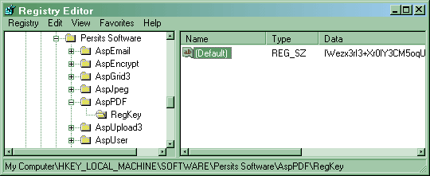

Like other Persits Software components such as AspUpload and AspEmail,
AspPDF uses a registration key-based
expiration mechanism. Unlike them, AspPDF requires a registration key
even for evaluation purposes. A free 30-day evaluation key
is sent to the evaluator via email.
Request your key at the Download page.
Once a copy of the product is purchased, a permanent registration key is sent to the
customer.
Registration keys used by AspPDF are 76-character strings
containing symbols from the Base64 character set. Each key has
the issue and expiration date information embedded into it securely.
A typical registration key looks as follows:
IWezx3rI3+Xr0IV3CM5oqU6QVbWIoQup/i8rCbDd48FrWoK+/tWSSbigLQAG56TKdPCcUP29G/d9
Once a key is obtained, it should be installed in the system registry
under the location HKEY_LOCAL_MACHINE\Software\Persits Software\AspPDF\RegKey as a default value,
as shown below.
The AspPDF.exe installer will place the key in this registry location automatically,
or you may choose to do it manually using regedit.

Alternatively, the registration key can be specified in your code via the RegKey
property of the top-level PdfManager object, as follows:
Set Pdf = Server.CreateObject("Persits.Pdf")
Pdf.RegKey = "IWezx3rI3+Xr0IY3CM5oqU6QVbWIoQup/i8rBbDd48FrWoK+/tWSSbinLQAG56TKdPCcUP29G/d9"
...
The current expiration date of the component can be retrieved via the Expires
property, as follows:
Set Pdf = Server.CreateObject("Persits.Pdf")
Response.Write Pdf.Expires
If this property returns 9/9/9999 it means a permanent registration key is being used.